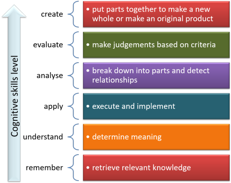

Unit 4: Running teacher training sessions

Unit 1 of this course considers what skills you need to transfer
from language teaching and what new ones you need to develop.
That unit also considers the range of roles that a trainer of
teachers needs to be able to assume at appropriate moments in the
training process.
Unit 2 deals with planning the content of the course.
Here, however, we are concerned more with the nuts and bolts:
delivering what you have planned and using your skills.
 |
Commonalities with and differences from language teaching |
Nothing that follows should be mysterious to a competent English
language teacher because the activities and tasks that are inserted
into teacher training programmes are rarely wholly new or unusual.
It is the mix, the content and the outcomes which change, of course,
because you are aiming at very different targets.
You cannot, usually, design a training session in the same way that
you design a language lesson and you will not be well advised to try
shoehorning teacher education into well known language lesson
structures such as Present-Practise-Produce or Test-Teach-Test.
Task-based learning structures are a different matter and may be
appropriate on all kinds of training programmes. There is,
naturally, a guide on this site to how such sessions may be planned
and conducted.
How you design a session structure is flexible but certain
commonalities with good language-lesson design persist.
In particular:
- Setting aims
Just like language learners, trainee teachers like to see what the purposes of sessions are and what they are going to know or be able to do by the need that they don't know now. Setting clear aims and making them explicit allows people to bring their own resources and knowledge to bear on the topic. It is, after all, a session for them, not you.
This is not to say that you should apply a test-teach-test pattern but to suggest that you set out some clear aims for each session at the beginning and plan on the basis of identifying what each stage or phase contributes to achieving your aims. - Evidence of learning

Trainee teachers at whatever level need to know what they are learning and how well they are learning it.
You need, therefore, to make sure that you assign time at the end and after longer activities which have substantial content to review and identify what has been learned and what it's for. - Variety of activities

Do not abandon your hard-won ability to know when to stop activities, when to change tack, when to alter the pace and when to give people space to think and consider.
Trainee teachers are no different from all other learners and will become impatient with lock-step, single-paced sessions quite quickly (usually after around 30 minutes, in fact). - Variety of interaction patterns

We'll consider the usefulness and possible drawbacks of group- and pair-work shortly but any change of focus and interaction pattern is often a welcome element in a training session, even if it is quite brief. - Learning curves

Just as in a language lesson, we need to watch the steepness of any learning curve and ensure that the level of challenge is only slowly increased as sessions go on. You can no more ask trainee teachers to do the hard things first than you can expect learners of the language to get everything right at the beginning.
We shall dwell below on levels of cognitive challenge and how to recognise them.
This unit is about considering what alternatives are available in most training settings, not about telling you what to do. After all, you are a teacher with considerable experience and you can use your intuition and judgement to decide what sorts of activity and interactions are suitable depending on the content and challenge of the materials and information you are trying to present.
This is the longest unit in the course because it is so central to making sure that your training actually works. It is also the area that most concerns novice trainers (or should).
 |
Alternatives to consider |
The following is not intended to evince a startled
Blimey. I'd
never thought of that!
from you but it may act as checklist for you when you are designing
a session so that you inject the right kind of variety, interaction
patterns and pace-changing events into your training sessions.
At the end, we'll consider how challenging these activities might
be.
Sessions on courses vary in length from less than an hour to a whole
day but as a rule of thumb, you should make sure that the focus,
interaction pattern, challenge and pace are changed at least twice
in each hour of training.
That way, trainees are kept on their toes, energy levels are not
allowed to drop (too much) and engagement is maintained for everyone
because we all have preferences concerning the kinds of learning
activities we find most useful.
- Brainstorming

- This is essentially an awareness and schema-activation activity
at initial training level because it is unlikely that novice
teachers will have very much to storm.
Experienced teachers, of course, are a different matter and a brainstorming session is often a useful activity which can be used to exchange ideas as well as reminding people of things they have forgotten or neglected. Here are two examples, one of each:In groups of three, list and prioritise in terms of usefulness the ways you think people can be helped to remember vocabulary.
In your groups, identify three things that teachers do in classrooms which reflect a view that language learning is a cognitive process involving the building and later amendment of hypotheses about the language structure. - Buzz groups

- This may be what is happening in the brainstorming session
so can be considered a subcategory of that.
The key with buzz groups is that the question should be simple and the time allowed very restricted so people work fast and generate ideas in an uncomplicated way.
Buzz groups can also be used as in-session mini-tests to see if the participants can remember what they have just encountered.
Here are two examples (one easy, one more challenging):You have five minutes to think of one synonym each for this list of words:
hide, repair, think, revolution, garden, elevator, delicious, nasty, really, incredibly
Now you know what assimilation and intrusion are, you have five minutes to work out what is happening in and transcribe:
ten pin bowling, bed clothes, she ate in, situation - Case studies
- This is a group or whole cohort activity, usually the
former, in which a set of data is presented from which the
participants are charged to extract some principles or apply
some judgements.
It is an unusual activity on pre-service courses or courses for inexperienced teachers because it demands high levels of experience to analyse a case effectively. An example might be:This is a transcript of 5 minutes of classroom interactions.
What correction strategies is the teacher using and how effective are they? - Cross-over grouping

- When a group is divided into four for an activity which has a
definable product what people will produce is not always fully
predictable. Groups A, B, C and D work independently and
then one member moves to another group, presents the findings of
the original group and then listens to what the new group has
produced. When that is done, a different member of each
group moves on to another group and the process repeats.
In this way the products of all groups are made available to everyone without the intervention of the trainer. - Feedback sessions

- These come in a number of guises and may be conducted in a
variety of ways. It's a good opportunity even on
in-service courses for some loop input to demonstrate different
ways of giving and getting feedback. For example:
After an activity, one member of each group is given the correct answers and must transmit them to the other members without showing them anything.
Feedback is given to the whole group and you by one elected participant from each group for each section of the task.
The suggested answer is projected and the individuals mark each other's answers before giving mutual feedback.
Groups present their findings to other groups in the form of short presentations or mini-lectures (see below). - Lectures

- There is a section below devoted to training for lecturing
because it is a skill you may never have actively acquired.
It is not a skill you often need as a language teacher, indeed,
using it is often disparaged in the language classroom, but it
is certainly one you'll need to use as a trainer.
For now, we can divide lectures into:- Formal lectures
are quite rare on most teacher training courses although they occur when groups are large or an invited expert has been asked to talk to the group.
In such events, interruptions are not welcomed but there is usually time for questions at the end. - Informal lectures
are less structured and interruptions for clarification, repetition, questions and so on are welcome. - Gapped lectures
are longer events punctuated by one of the other alternatives in this list. There may be opportunity within the lecture for some group work, a test, a series of buzz groups or whatever before the thread is again taken up and the lecture continues. - Mini-lectures
are a frequent phenomenon on all types of courses and consist of 5- or 10-minute explanations of an issue or an idea. They are often preceded and followed by associated tasks. - Participant mini-lectures
are often a motivating and welcome way of getting feedback from activities. A group or its representative presents the findings of a task to the rest of the trainees.
- Formal lectures
- Group work

- Group work is a mainstay of almost all training courses (and language teaching, too, of course). It is so central to all courses, that we will discuss its advantages and disadvantages a little more later on.
- Projects, Task-Based Learning and Problem-Based
Learning

- As an experienced and professional language teacher, of
course, you know a good deal about how to run projects and
Task-Based Learning lessons (or series of lessons). You
may be less familiar with Problem-Based Learning which is an
approach developed some years ago in the training of doctors and
other medical staff which has since developed into other forms
of professional training in the sciences and more recently, the
humanities, too.
The essence for our purposes is that the advantages of such an approach include- training in collaborative working with colleagues
- the enhancement of presentation skills
- the development of autonomy in researching language and language teaching
- the fact that it can be based on real-world problems and issues that are relevant to teacher trainers
- the recognition that knowledge can be acquired more easily and effectively than it can be transmitted
An example of a Problem-based task is:The selection of a first- or second-conditional form by a speaker is dependent on the speaker's perception of the likelihood of an event or state transpiring so, for example:
For more on this, see the guide to Task-Based Learning on this site (new tab) which also includes brief consideration of Problem-Based Learning.
If I win the lottery, I'll ..
and
If I won the lottery, I'd ...
are only distinguishable by speaker perception of the likelihood of winning.
Problem: how do we design a lesson so that speaker perception is made clear and practice of the forms is authentic?
Supplementary problem:
The same considerations apply to the selection of
She must've got lost
over
She might / could've got lost
Can we carry of the same principle from the solution to the first problem to ensure that practice of these forms is authentic? - Guided reading

- Guided reading in which course participants are given a text
to read and some tasks to accomplish as they read are frequently
assigned to individuals outside the course times either as a
follow up or in preparation for a taught session.
That need not be the case because, as a respite from continual talk and chatter, it can be refreshing for people to be asked to read a text in class for 10 minutes or so on then to discuss what they have understood from it, either in groups or in a plenary session.
Just as texts are frequently handled in the language classroom, the key term here is guided. People have to read for a reason so you need to look at the text you are using, identify the most important ideas and invent a task which elicits them.
Feedback needs to be thorough because the task is part of the session input and may be a key part of it. - Jigsaw activities

- These are familiar from the language classroom where they
constitute a simulated communicative activity but often
neglected in a training setting.
Giving people partial information in groups and then requiring them to come together (or by using cross-over grouping) to pool their data is often an effective and participant-focused way of introducing complex ideas or competing theories.
This activity is, of course, an ideal opportunity for a bit of loop input if the participants are unfamiliar with jigsaw activities. Here's an example of a task:Group 1 gets the speaking side of this table and Group 2 gets the writing side:
In theory, the groups should both end up with a good understanding of the differences because they have had to engage with the materials and explain the content to others.

The task is:
Explain to your partners what you understand by each row in your table and see if you can find a match in your opposite number's table for yours. - Peer teaching

- This is a common way of getting pre-service trainees to
experiment with approaches in safety without causing too much
havoc in real learner groups.
Once the initial embarrassment has worn off, it can be an effective and useful procedure which takes the focus off the trainer.
At all levels, this can be extended to areas of language analysis in which members of the group explain tricky structures or relationships to others.
You are never sure if you have fully understood something until you are called upon to explain it to someone else.
Peer teaching can be a way of covering many disparate areas on a course when time is short because members of the group are doing the research and teaching for you.
Here are two examples:A learner (sitting next to you) has just said: Good. John came. Now we can start the game.
Explain clearly with two examples what the error is and get the learner to amend what has been said correctly.
Research the phenomenon of transferred negation, adjective marking, combining forms (etc.) and be prepared to teach your colleagues in groups of three for 10 minutes in the next session.
(Any more advanced area of grammar, pronunciation or functional meaning can be the focus.) - Pyramid or snowball grouping

- This can be hard to arrange, although somewhat easier
online, and consists of pairs working together on a task or part
of a task, coming together to make groups of four and sharing
ideas, then combining into groups of eight and continuing until
the final group is the whole cohort of participants who will by
now have garnered ideas from everyone so feedback can be
curtailed.
You need to monitor this activity carefully to make sure that the target data have, in fact, been identified by the group at the end. - Role play

- This can make a pleasing change of interaction and activity
type although its utility is often limited. Here's an
example:
A: You are a learner of English (at intermediate level) who is unhappy with your progress. You don't believe that what you do in class is helping you. Start by explaining the problem.
B: You are the teacher and feel that this learner has unrealistic ideas for the progress he/she should be making and is too often sidetracked by trying to use language far about the level.
Now get together and play out the scene.
Participant C: Your job is to listen and take notes and decide whether the teacher has managed to explain the issue clearly enough. - Self-help groups

- These are a useful adjunct to training courses but setting
them up and maintaining momentum can be a challenge. They
work best if there is an agenda rather than just an amorphous
admonition to help others.
Such groups need to be constructed with a little care to make sure that the levels of knowledge and experience are either:
As homogenous as possible so that people are not intimidated by more experienced members of the group
or
As mixed as possible so that the more experienced can help the less experienced
and both types have their uses. - Narratives

- Narratives are rarely used on teacher training courses,
although they are often a large part of English language
teaching lessons. They can be used occasionally for
specific ideas, however, and often make a refreshing and
engaging change from other trainer-led activities.
Here are two examples:Now I'm going to tell you a story of a lesson I taught recently. Please listen to it and, as I go along, I will pause occasionally for you to make notes about what went wrong and why it went so badly wrong. OK? Now, ...
I was in a school recently and was wandering around the classrooms, listening, as you do, to what was going on. As I tell you the story, write down what theories of learning and language the teachers I overheard were working from. OK?
Now, in the first room with the blue door, I heard all the students chanting irregular verbs with the teacher stopping them to model the pronunciation and form when they got it wrong.
In the next room with the pink door, all the students were sitting round a large table with the teacher. There were no books and no equipment was being used. One student was talking about a terrible journey to work one day and the teacher was saying nothing. The other students were listening and occasionally reacting and asking questions.
In the last room with the yellow door, all the students were working on designing a new school and trying to figure where everything should go from the kitchen to the classrooms to the toilets and the offices. They had large pieces of paper and were drawing up plans, discarding them and drawing new ones. The teacher was wandering from group to group, staying a while with each and supplying small amounts of language help and advice.
And so on. - Seminars

- Seminars differ from simple training sessions insofar as all
members of the group (which may be all the participants on a
small course) are charged with preparing something to present to
you and the other participants. This may be the same task
for everyone (and that is often the easiest to handle) or
different tasks.
Seminars are not usually very helpful on pre-service courses because people simply do not yet have the resources to do the research.
Here's an example of a task for in-service training:Read the attached summary of theories of second-language acquisition and be prepared to argue for the one(s) you believe that, in your experience, are the most likely explanations for the processes of learning an additional language.
Present anecdotal or case-study evidence of your own to back up what you say. - Socratic questioning

- In the language classroom, this is often simply called
elicitation but there's a bit more to it than that.
It involves leading people to the truth by a system of question → answer → objection → new question → refined answer → objection → question etc.
It takes a bit of practice and a certain amount of self-confidence but can be revealing and effective. Here's a short example of the beginnings of one at pre-service level:OK. Now Mary, so far in this session, what constitutes the subject of a clause?
It's the noun which does the action of the verb.
OK, but in, The whole class complained this morning, what noun is the subject?
Class.
No, that can't be right. What about the words the and whole?
Oh, I see, the subject is the whole class.
Yes, but it's not a simple noun so what is it?
It's a noun phrase.
Good. Now take this sentence: How John drove frightened me. What's the subject of the verb frightened?
Ah, it must be ...
and so on. - Tutorials

- On many teacher-training courses tutorials are one-to-one
events typically held after teaching practice to get and give
feedback to the trainee. They may take the form of
seminars with participants tasked to present something they have
learned about (see above).
Unit 5 of this course covers this area in some depth so no more will be said here. - Workshops
- Workshop sessions are meat and drink to teacher training
courses and often form the basis for a session. It is,
however, a fact that workshops can be overdone and group work in
particular can often be unproductive unless a good deal of
thought goes in to the tasks and the participants are alerted to
what comes out of them (or should).
At pre-service levels, workshop tasks can only succeed if you inject the data because, by definition, such groups do not have the data on which to work. In-service courses are a different matter.
 |
Group work: good and bad |
Group and pair work (which is more or less the same thing but
with the minimum group size) is such a mainstay of language teaching
that it is carried over without criticism into language teacher
training, often with somewhat mixed results.
Unit 1 of this course considers at some length the differences
between teaching a language and training language teachers and in part of
that it was suggested that the targets are different insofar as
language teaching involves developing a skill in the learners and
allowing them to acquire some competence in using a foreign language
but that much of teacher training involves the transmission of data
rather than the acquisition of unconscious skill using.
The outcome of good language training is that the learner is able to
apply the language skills unthinkingly and focus on the message not
the medium.
It could be argued that unconscious skill using rather than
understanding and deliberate application of knowledge is the outcome
of poor, not good, teacher training.
We want
teachers to think about what they are doing and why they are doing
it.
Group work, then, while an effective procedure in a language classroom to make the learned automatic (in other words, to cross the line between input and intake) may not be as effective when the data that teachers need to assimilate are not available within the group. If they were, there would be a lot less need for well educated and informed teacher trainers like you.
We need accordingly to be a little sceptical of claims that group work is always a good thing or that it is somehow superior to being told things or being led individually through reading, questioning and old-fashioned thinking to the conclusions which seem to lead to effective and workable teaching solutions.
 |
Group work: the bright side |
Group work is a very flexible way to organise learning because it can be used for:
- Seminars and tutorials
In which you as the trainer can focus on issues of importance to individuals or small groups of individuals. These sessions can have strict or loose structures and be closely aligned to the needs of the people concerned. - Inter-group activities
can be used for carrying out and getting feedback from:- buzz groups
- workshop tasks
- brainstorming activities
- reading activities
and more
- Workshop tasks
can be done in groups where you can more easily monitor what people are doing, whether they are on task, what help they need, what feedback you should be prepared to give at the end and so on. - Feedback
can be efficiently taken from and given to groups because one person can be nominated to supply a range of views and insights. On larger courses, in particular, this can save a considerable amount of time and short-cut the tedious going-round-the-class routine.
Participants, too, often find group feedback a less threatening and sometimes a more empowering procedure. - Understanding
We noted above that you don't know you have understood something or thought it through until you try to explain it to someone else. Group work is, of course, the ideal vehicle for this kind of self-discovery to take place in an unthreatening, environment in which only one's peers are judging the product.
 |
Group work: the dark side |
Not all group work is a good thing and there are issues to consider and problems to avoid or at least ameliorate.
- Time and expense
Group, pair and one-to-one tutorials mean that the tutor's time is being spent on, usually, a minority of the group as a whole. This is expensive in terms of time allocation and requires more preparation on the trainer's behalf.
We can get around this problem to some extent because, as we have seen, not all activities and session tasks need the hands-on presence of the trainer.
Other subgroups, away from the trainer can get on with some tasks successfully while the trainer's time is devoted to only part of the whole group. - Input
Trainees, especially on pre-service or initial training courses may simply not have any data worth imparting to other members of a group and this may also be true of in-service courses.
The complaint from trainees is that when they are working in groups they are simply pooling their ignorance rather than sharing insights and knowledge.
To reduce the impact of this sort of problem it is worth considering exactly what the task is that the group are being asked to carry out. Group work is, in other words, a good place to discuss and clarify one's thoughts on an issue but a bad place to learn anything really new.
Clarification and consolidation in groups should, therefore, follow some real input either from you or from the materials and texts you use. - Interpersonal failures
Some groups simply don't 'work' and there are two main possible reasons for that:- an imbalance of knowledge or experience may mean that
some members of the group feel under challenged because they
are operating with people less knowledgeable or less
experienced while others may feel uncomfortable because they
recognise the imbalance and know they have little to
contribute.
Organising people into groups is more than an exercise in class management, it is also an exercise in social psychology. As far as possible, tasks should fall into people's zones of proximal development (to which there is a guide on this site if you care to learn more). Too easy and the trainees become bored and frustrated; too difficult and anxiety and frustration set in. - an imbalance of personality types may result in some group members or sometimes only one member dominating discussion and making the aims unachievable. That is worth some thought.
- an imbalance of knowledge or experience may mean that
some members of the group feel under challenged because they
are operating with people less knowledgeable or less
experienced while others may feel uncomfortable because they
recognise the imbalance and know they have little to
contribute.
So, no, group work is not always the most effective way of delivering a course and rarely the best way to deliver its content.
 |
Lecturing skills |
To use a little deliberate recycling (a skill you already have and one to think about when training), we saw above that lectures can be divided into five types like this:
- Formal lectures
are quite rare on most teacher training courses although they occur when groups are large or an invited expert has been asked to talk to the group.
In such events, interruptions are not welcomed but there is usually time for questions at the end. - Informal lectures are less structured and interruptions for clarification, repetition, questions and so on are welcome.
- Gapped lectures are longer events usually punctuated by one of the other alternatives in this list. There may be opportunity within the lecture for some group work, a test or whatever before the thread is again taken up and the lecture continues.
- Mini-lectures are a frequent phenomenon on all types of courses and consist of 5- or 10-minute explanations of an issue or an idea. They are often preceded and followed by associated tasks.
- Participant mini-lectures are often a motivating and welcome way of getting feedback from activities. A group or its representative presents the findings of a task to the rest of the group.
The last of these does not concern us but the skills you need to develop are common to the first four. In particular, it is likely that you will need to use b., c. or d. above quite frequently and you need to prepare for that. The skills you need consist of:
- Signposting

Good lecturers and seminar leaders use explicit signposting to keep people informed and let people know what is coming next. Poor ones don't, unfortunately, as you may have discovered on your own educational journey.
Good signposting allows trainees to take good notes and good notes lead to good learning.
There are some obvious ways that you as a lecturer can use signposting and they perform a range of important functions:- Introducing the topic.
This can be done in many ways and they are mostly quite explicit. A few common ones you should consider using are:
Let me explain the relationship between mood and modality like this ...
Before we start to design a task we are going to look at ...
OK, I want to address ... - Outlining the structure
This can be done by saying, for example:
There are three main ideas.
The first area we have to consider is ... and then I'll get on to ... and ... - Introducing discrete sections.
We need to begin by considering ...
Firstly, ...
Secondly, ...
etc.
Now we can move on to ... - Signalling transitions
OK. Now let's move on to consider ...
We have considered this in some detail so now we can ...
Now we need to look at the implications of ... - Summing up
OK. Now let me recap the important points.
Overall, we can see that ...
In summary / conclusion, ...
The three main takeaway points are ...
- Introducing the topic.
- Identifying major ideas and distinguishing them from
supporting ideas, examples and hypotheses

You need to develop the skill of using linguistic clues to help the trainees to listen out for what is really important, ignore irrelevance or detail available elsewhere and take / make good notes. The ways to do this include:- Helping people to identify the core ideas. For example:
This session concerns ...
The main point I want to stress is ...
There are two competing theories ...
By the end of this session we will be able to see that ...
What follows signals like these will often be used as the basis for note-making subheadings and headings (by well trained participants). - Explicit signalling of subsidiary points. For
example:
You may like to know that ...
Incidentally ...
A less important factor is ...
We are not concerned today with ...
What follows comments like these can safely be left out of the trainees' notes altogether so you may like to ask yourself why you are including them. - Signalling exemplification. For example (!):
For example, ...
Another instance of this is ...
Another case in point might be ... - Using prosodic features to signal important information
Participants can use these signals to make headings and subheadings in notes. These features include:
stress on particular words: and THAT is what causes the ...
rising intonation across a clause
higher key on critical terms
- Helping people to identify the core ideas. For example:
- Identifying relationships between ideas

It is important that that trainees can recognise your intentions concerning the existence and the direction of causality and restrictions on the truth of statements. Here's how:- subordinating conjunctions
- condition and concession signals: if, providing,
unless, but for, assuming etc.
For example:
If you are teaching very low level learners ...
But for pre-teaching phase ...
Assuming the test is reliable ...
etc. - causal connectors: because, as, since, so (that). in
order for/to/that etc.
This happens because ...
So that learners can ...
In order for this to be successful ...
etc.
- condition and concession signals: if, providing,
unless, but for, assuming etc.
- lexical devices of two types
- verbal processes such as:
This allows learners to ...
The results of your reading and research will lead to ...
This error is caused by ... - nominalisation such as:
The root cause was ...
The result of all these conflicting factors was ...
The origins of the method lie in ...
etc.
This sort of nominalisation is sometimes called shell-noun selection because words like cause, problem, origin etc. may be used to encapsulate a set of propositions and ideas and make referencing easier. There is, naturally, a guide to shell nouns elsewhere on this site.
- verbal processes such as:
- subordinating conjunctions
- Identifying transitions

Few longer lectures focus on a single topic and, even when they do, there are usually sub-topics contained within the whole. You need to help people to recognise the point at which the topic is changing because that allows them to follow and make / take orderly notes.
You can do this by using:- adjuncts:
Now, in practice, the situation has can be described as ...
In terms of learner training in listening skills we can ...
Up to now, we have considered ... but we also need to think about ... - attitudinal or content disjuncts which signal the
speaker's view of the likely truth of a proposition allow listeners to see that you
are moving on:
Obviously, the next step is to ...
And that, of course, has implications such as ... - conjuncts, used carefully, allow you to:
- enumerate:
Secondly, we come to the question of ...
Step three is .... - rephrase (to signal that the topic is not changing):
Put another way ...
In other words ...
Better put, perhaps, .... - show results:
Consequently, ...
As a result, .... - recap (to signal that the topic is not changing)
To sum up, ...
So, overall, the situation is ...
To conclude this section then ...
- enumerate:
- adjuncts:
Later in this unit, we will look in a bit of detail at how to incorporate elements of this long list into the planning and delivery of a training session.
Classifying tasks: cognitive challenge |
When planning input sessions and mixing in tasks with mini-lectures, buzz groups and role plays and so on, it is worth taking a small step back and considering the level of cognitive challenge that you are placing on your trainees. If you begin a session with very challenging activities, you may find that people become tired before they have had a chance to learn anything. On the other hand, it is a good idea to insert more challenging tasks into the times when people are already refreshed, after a break, say, or when energy levels have risen because of a change in interaction patterns.
For this section, we are going to work from a revision of Bloom's
taxonomy of educational objectives.
There is a guide on this site which will provide you with more
detail and the references that it will be worth your while following
when you set about the task of planning sessions.
Click here to open it in a new tab.
It looks like this:

What it all means is that the cognitive challenge represented by
tasks increases from the bottom up.
This is a strict hierarchical system in the views of some
proponents.
In other words, each level feeds into the next so trainees
need to remember something before they can understand it, understand
it before they can apply it, apply it before they can analyse it and
analyse it before they can evaluate it.
At the highest level of create, your trainees must have remembered,
understood, applied, analysed, and evaluated something before they
can create anything new.
Others are more flexible in their approach and suggest that one can,
for example, analyse what has been read or heard without necessarily
having already applied it. It is also possible, of course, to
evaluate something one has not yet applied but impossible to do so
with something one has not remembered or understood and very
difficult to do so with something one has not analysed.
For a bit more on each level, we'll extract the relevant parts of the guide on this site and make adjustments because we are talking about training adults in a specific skill (teaching a language).
- Remember

- Rather obviously, this concerns the ability to retrieve
relevant knowledge in order to be able to apply other cognitive
processes.
It is not possible, for example, to set about classifying methodologies by the theories of mind and learning which underlie them, if you can't remember what the methodologies are about.
Equally, it is difficult to see how the tense and aspect structure of English operates unless you can at least remember terms such as progressive, continuous, iterative, habitual, prospective and so on and have some idea what the words mean.
The first and easiest sort of task in a training session should, therefore be one which reminds people of basic terminology and meanings.
Buzz groups, matching tasks, card games and more are simple vehicles for this kind of cognitive simplicity. - Understand

- Understanding requires more than simple recall of salient
features.
For example, you may know that English uses a certain verb form to signal an iterative aspect or changes the word ordering in a predictable way when making a passive structure so you are able to answer questions concerning what it does.
However, to demonstrate understanding, you need to respond adequately to questions which are aimed how this is done and, most critically, why.
At initial or pre-service training level, it may be enough to be able to say how a passive is formed or what a causative verb is but without some concept of marking word order and structure, the information is only half absorbed. At more advanced levels, people need to consider how this happens and why a speaker or writer may choose, say, a cleft sentence over a simple one or front an adverbial for effect.
Methodologically, trainees may remember terms such as inductive vs. deductive learning, noticing, inferring and so on but until they have tried to explain it to someone else, we can't be sure that the ideas are understood not just remembered. Sometimes, a bit of Socratic questioning (see above) is a good way to check.
On training courses, to repeat, understanding has to be checked. How you do it is up to you but buzz groups and short tasks to do in pairs or as a pyramid procedure are other common choices. - Apply

- Remembering and understanding are not enough. The next step is to
apply knowledge to the classroom.
At pre-service levels it may be adequate preparation for the classroom, for example, to be able to recognise affixes which form nouns is part of factual knowledge, understanding how nouns work to make meaning in combination with verbs and other word classes involves some understanding of the phenomenon but inferring meaning from a text by the recognition of how noun phrases are modified and act as the subjects and objects of verbs requires the application of knowledge and understanding for a communicative end.
Equally, it may be enough to remember and understand how English deals with modal concepts such as obligation, necessity, advisability, possibility and so on but at higher levels much more is needed so that people can deal coherently with a complicated area and make it accessible for their learners. That almost certainly means applying concepts in the classroom which make sense to learners and to do that, you need some better categorisation than course books usually offer.
The ability to remember what the key subskills of reading are and understanding how they are used is a good beginning but applying the concepts in the classroom requires good planning and practice.
A group workshop task, for example, to design a teaching sequence for a given text is one way to encourage the ability to apply recall and understanding. - Analyse

- At all levels of training, it should be
possible for participants to break down the syntax of English
into component phrases so a sentence such as:
The man told John that the house was for sale
is not difficult to remember, understand and apply as a model in the classroom.
It is another step to understanding that a sentence such as:
The old woman in the corner of the bar deliberately told Mary and her friends that the concert had been cancelled
follows exactly the same pattern with the same phrasal components.
It is rarely enough too, to take a familiar example, to be able to recognise an error, recall what sort it is and apply some correction techniques. Analysis, however, involves more cognitive challenge in figuring out why the error occurred, and how to prevent its recurrence.
Similar considerations apply to skills analysis and the ability to break down a skill into component subskills is obviously important. This means that people get away from loosely suggesting that they want to practise reading and so on and are more precise about exactly what micro-skill they are hoping to teach, develop, practice or raise people's awareness of. - Evaluate

- This is a key teaching skill at all levels of training and
needs to form a core component of all courses.
The ability to recognise what went well in a lesson, what needs improvement and so on is a key one but the ability to evaluate the process is even more useful because it leads to improvement, rather than regret.
Trainees need help and practice to do this well and need to use evaluation skills consistently with regard to their own, and sometimes to other's, teaching performance.
It is also, of course something that trainers need to do even better.
This high-level skill applies in training sessions especially when considering a case-study task (see above) or when you are asking people to evaluate materials and procedures. Because evaluation depends on the four lower-level skills, remembering, understanding, applying and analysing, tasks which demand it have to be left until later in sessions or evaluation will fail for lack of knowledge.
To evaluate something intelligently people need to work from explicit criteria so they aren't just stabbing in the dark or being too impressionistic. It is, therefore, probably not worthwhile just asking, for example:
Do you think this is a useful listening text and exercise?
but asking instead, something like:
Now apply the four criteria we have developed to evaluate listening tasks to this text. - Create

- This is the most demanding cognitive task because it requires people
to deploy all the lower-level skills to make something new.
Asking a novice teacher, for example, to plan and execute a lesson from scratch is likely to result in frustrating failure because the task does not recognise that the lower-level cognitive skills need to be worked on before something new can be created. It's a little like asking a beginner pianist to write a concerto.
That is why you do not ask pre-intermediate, A1 learners to write essays about climate change.
In language teaching, this may involve the combination of language recall, understanding of words and structures, application of language patterns and communicative strategies, analysis of data and the evaluation of the quality and usefulness of the utterances of others. It often requires a synthesis of all those skills.
In teacher training, the object is to start with the recall of procedural options, an understanding of what they are, the ability to apply them in the classroom, analyse and evaluate their success and then create a fully coherent teaching and learning event It is not something to be taken lightly or asked of people without providing a great deal of preparation.
Here's a summary:

In the guide, too, there is a list of verbs which betray the sorts of cognitive challenge a task requires. For example, if your task is just:
With your partner, list the four main component of communicative competence
then you are only concerned with the lowest level: recall.
However, if that task also involves, for example:
Now discuss what you see as the main differences between functional and strategic competence and form a new group of four to exchange ideas.
then you have moved up to the next level of understanding the concepts. Then, of course, the task can be extended one step further to:
Think of three ways in the classroom that you can focus on strategic communicative competence and explain why they are effective.
then you have shifted up the gears to application and evaluation.
The final step might be to plan and carry out a lesson focusing on
teaching strategic speaking skills.
You can see for this that the instruction betrays the nature of the
task:
- In the first task, the instruction is merely to list things – that's a recall task
- In the second, the trainees are asked to discuss – that involves understanding
- In the third, the trainees have to think of ways in the classroom – that involves the ability to see how to apply a concept
- In that task, too, the instruction is to explain why they are effective – that requires evaluative skills
- Finally, if the trainees are to go on to a teaching practice session on communicative skills they will be asked to create – the highest level task
At a less advanced level, the same kind of hierarchy of tasks can be used to analyse language which follows a gently rising curve of challenge from low- to high-level cognitive demands. For example:
- List the 4 most important open word classes
- Discuss with a partner which carry the most essential meanings and list them in order of importance
- Compare your list with a new partner and justify your decision
- Now work together to demonstrate how you would focus on the most important two categories in a short reading text (attached) in the classroom. Make a list of what you would do and pin it to the wall.
- One of you must now stand by the list and explain to anyone who asks how you have categorised the word-class importance and analysed the text. The other trainee needs to go to another pair's list and ...
- ... judge how
effective you think their ways of focusing on meaning in the
text will be.
Then the pairs swap and we repeat this stage of the exercise. - Later tomorrow, you will be asked to plan and teach a lesson focused on lexical meaning using this text or another from the bank in the file.
Here's an edited version of the list of verbs you may want to use to set tasks so you can see for yourself how demanding you have made them.
| remember | understand | apply | analyse | evaluate | create |
| Identify List Match Name State Tell |
Compare Describe Discuss Explain Talk about Tell |
Demonstrate Illustrate Practise Relate Sketch Use |
Analyse Categorize Compare Contrast Distinguish Examine |
Assess Evaluate Judge Justify Rate Value |
Combine Construct Create Design Devise Plan |
A fuller list is available in the guide and from Heick (reference at the end).
 |
Planning and visualising a training session |
We've encountered rather too many long lists in this unit so what follows here is a way of planning a lecture or workshop in a way that allows you to incorporate the most important skills and techniques.
Just like in the design of anything else, interiors, buildings,
transport networks, teacher training sessions and so on, the mind's
eye comes to the rescue because we need to visualise the end product
while we are designing it.
This is probably the only way we can see, so to speak, whether what
we have planned is fit for its purpose. The process looks like
this:

and it works like this:
- Topic and target

This may be very closely defined along the lines of, e.g.:
Word classes in English
Top-down vs. bottom-up processing of reading texts
etc.
or it may allow you a bit more flexibility in have a title such as:
Lexis
Reading skills
etc.
If it's of the latter sort, you will have to make a short list of what you are intending to include and leave out.
At the planning stage, now, you need to think about:- how you are going to introduce the topic and make the aims of the session clear (see signposting a. above)
- how you are going to start people off with some kind of awareness-raising task using buzz groups or brainstorming in small groups or pairs.
- Structure

This is the core, of course, and this graphic is how you should visualise the activities with the horizontal bars representing how much time to devote to each stage so, for example, the first bar might represent a brainstorming phase, the second a gapped lecture stage with a longish activity to do in the middle followed by a short application task in groups and a final round-up of the key ideas.
During this bit of the planning process, you need to:- make sure you have used around three different activities with different interaction forms in each hour
- make sure that none of the stages is unbalanced in terms of its taking too much or too little time
- Visualise

This is key to identifying whether what you have planned will work and the way to do it is like this:- Read through the session plan and memorise the stages and activities
- Now shut your eyes and see if you can imagine what you
will say at the end of each section and the beginning of the
next from the opening of the session till the end.
For example:
How will you begin the session?
What will you say?
How will the trainees react?
How will you raise awareness of the lesson's topic?
How will you start the tasks?
What instructions will you give?
How challenging (see above) are the tasks?
Is the challenge curve about right, too steep or too shallow?
What will you do while the trainees are working in groups / pairs?
How will you signal that the end of activities and the session?
etc.
Make sure you can do this easily for each and every stage. - Try to see the session as a narrative with facets which concern the participants, some concerning events and some concerning outcomes. It is easier to remember a story than a process.
- Now do it again.
- Amend and repair

In your visualisation, you probably discovered things that seem out of order or won't work, possibly because they haven't been prepared, because the trainees won't be able to do the tasks or the level of cognitive challenge is unsuitable at this stage.
Go back to the plan and do the repair work, reordering, shortening, extending, adding or deleting activities. - Re-visualise
Follow the outline above but with a bit more care thinking about and through:- What you will say:
focusing and introducing the topic
instructions
explanations and lecture modes
directions
questioning
etc. - Where you will be:
by the board
with pairs or groups
standing out
at the back
at the front
etc. - What you will be doing:
helping
taking notes
listening
lecturing
moving around
etc. - What the trainees will be doing:
listening to you and taking notes
responding to your questions
talking to each other
talking in groups
talking to the whole group
etc. - What you will do if:
the equipment breaks down?
the trainees don't understand what to do?
the trainees have more trouble with the tasks than you expect?
the trainees finish tasks more quickly than you expect?
- What you will say:
If you still aren't completely happy with what you have, repeat steps 4 and 5 until you are.
You can, if you have time, try this out now. Click on these
links to select either:
A session on the elements of a sentence for pre-service training
A session on modality for in-service training
Both will open in new tabs.
Look through the material, download the worksheets and imagine, in
your mind's eye, how you think it would work for you.
Cut, amend, reorder, add as you wish.
This is quite a complicated process but it need not be too
time consuming because humans are blessed with the ability to think
through things in fast-forward mode as well as in real time.
You won't have to do this for all your sessions because it soon
becomes second nature at the planning stages to visualise as you go
along.
At the beginning of your training career, however, using a
visualisation exercise like this pays immediate dividends – trust
me.
 |
Using notes |
You wrote the plan for the session carefully but you do not want to be continually referring to it in the session for six connected reasons:
- It distracts you.
- It encumbers you with a piece of paper in your hand or it means you have to keep returning to your desk / table to check the notes.
- It gives the impression that you are reading from a script and that reduces your trainees' confidence.
- Trainees expect their trainers to be knowledgeable and constantly referring to notes creates a credibility gap.
- It implies that you haven't properly prepared and thought through the plan.
- While you are checking your session-plan notes, you lose contact with the group and you can't see what's happening.
What the foregoing was intended to help you achieve is analogous
to speaking without notes. You do not have to be a great
orator to achieve that – just well prepared and alert.
One obvious dividend now is that you have committed the session to
memory and you won't need notes. That looks like, and is, the
behaviour of an experienced and knowledgeable teacher trainer.
Most people still have some notes, of course, especially for the
structure of longer sessions, but we try not to need them.
 |
Evaluating training sessions |
If you are going in to teacher training, it is a fair assumption that you already have quite advanced evaluation skills concerning your own teaching on language courses so there's little to say here except the admonition to re-apply these skills to your own training sessions (and those of your colleagues if that is appropriate and they let you). In particular, try these questions and invent some more of your own:
- Did I make the session's overall aims clear?
- Were the participants aware of why we were doing the tasks?
- Did I use at least three different procedures every hour?
- Were there identifiable changes in pace, interaction and focus?
- Did I, more or less, follow a scale of rising levels of cognitive challenge or were participants thrown in at the deep end too much?
- Did I take the time at the end to summarise what had been learned?
- Were the participants aware of what they learned from group work?
 |
Self-evaluation |
There are two tests and a short activity for you.
Part of self-evaluation for this unit is, naturally, to revisit
sessions you have given or planned taking into account all of the
above.
- Try matching the activity to its name.
- Now, try matching tasks to the taxonomy.
-
Finally:
Plan the first hour of a training session in your setting to address an area of English lexis (meaning relationships, morphology, affixation etc.). Into the session insert the following in a logical and coherent order:- Pyramid group
- Buzz group
- Guided reading
- Matching task
- Evaluation task
There can be no right answer to that exercise – it's purely for you to evaluate your ability to plan for variety.
References (from the guide to Bloom's taxonomy):
Bloom, BS, Engelhart, MD, Furst, EJ, Hill, WH and Krathwohl, DR,
1956, Educational Objectives: The Classification of Educational
Goals, London: Longmans Green and Company
Heick, T, 2018, 50 Ways to Use Bloom's-Taxonomy in the Classroom,
Retrieved from https://www.teachthought.com/learning/ways-to-use-blooms-taxonomy-in-the-classroom/
[March 2019]
Krathwohl, DR, 2002, A Revision of Bloom’s Taxonomy: An Overview,
Theory into Practice, Volume 41, Number 4, College of Education, The
Ohio State University
Waters, A, 2006, Thinking and language learning, in ELT
Journal Volume 60/4, Oxford: Oxford University Press